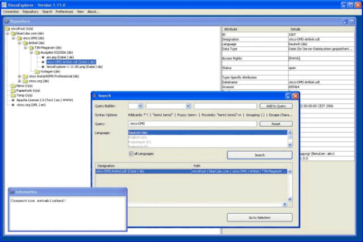
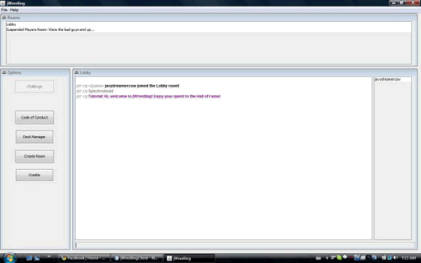
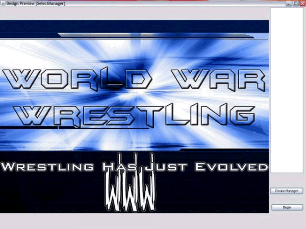
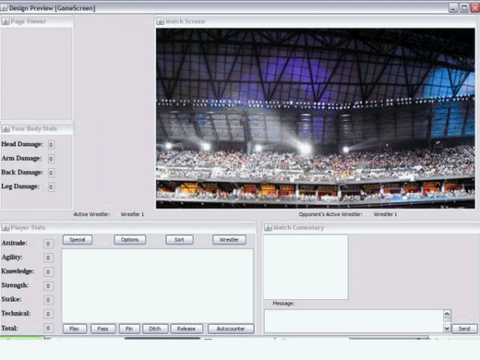
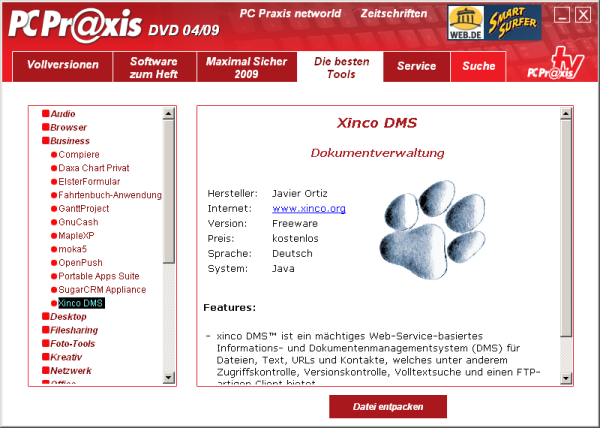

{kind=link}

By Geertjan Wielenga
One area where the NetBeans Platform, the world's only modular Swing application framework, is well suited is as the basis of an enterprise's internal quality testing tools. In Semiconductor Validation Engineering on the NetBeans Platform , you can read how engineers at PMC Sierra have created Swing applications on the NetBeans Platform to validate PMC Sierra's semiconductor products. A similar thing is done at B. Braun, a healthcare product provider.
One of the devices made by B. Braun is Outlook Safety Infusion System, which helps to ensure that "the Right patient receives the Right medication in the Right dose from an authorized clinician at point-of-care". This is what the device looks like:
Below, we meet Javier Ortiz from B. Braun, who is in charge of developing tools for quality testing of healthcare devices such as the above.
Hi Javier who are you and what do you do?
I'm a software and power engineer from Juncos, Puerto Rico, and work as a software quality engineer for BBraun in Carrollton Texas. I love wrestling to the point that I've practiced it for a while, love video games, and programming is my hobby! Among my software quality related tasks, I'm in charge of developing tools for testing purposes, perform code reviews, and analyzing programming issues.
So, you work in quality assurance in the healthcare industry. What kind of software applications are typically required in this area?
Healthcare industries have many requirements due to FDA regulations. They use a lot of data gathering software and databases, document management systems, training management systems and, as in my case, some development tools.
In other instances they want to use open source applications that don't comply with FDA regulations. In my case, I joined Xinco (more info on that later in this interview) and added the 21 CFR part 11 functionality to it. After validation, I gave Baxter, my employer at the time, a document management system, got the Xinco project to the next level, and became its lead programmer on the process.
Let's now look at your work at B. Brain. There you work on the Outlook ES Interface Tester. What is that exactly?
Outlook ES Interface Tester (OIT for short) is a test framework for interfaces of our device the Outlook ES. As part of my duties as quality engineer I need to figure out how to test that all requirements are met by our product before it is released to the public. Among those requirements are communication protocols and data transfer that can be too technical for a technician to test.
OIT provides an user friendly GUI to "see" those protocols and data transfers, providing parsing and visual aids to ease the validation process.
All huge parts of our device! Here's a screenshot of OIT:
When did you start creating it and what were the requirements?
The first tool, HIMS (Health Information Management System), started development in 2008 as a Swing based application. The aim was simply to provide a visual way of seeing the interaction between systems and verify all formatting and data requirements of the defined protocol were met at all times.
How does the NetBeans Platform help in this scenario?
In time, other interfaces were added to the system and more tools like the HIMS were needed. As a regulated environment all software, and changes to those softwares, come with a huge amount of documentation to comply with FDA regulations. Also, the new interfaces would have code that would be shared somehow.
The NetBeans Platform provided a way to merge all those applications (and any future ones) as modules into one application. Also, many GUI issues I encountered in the early Swing applications were already elegantly solved by the NetBeans Platform, so migrating to it fixed a lot those issues as well!
Another screenshot:
Do you have some tips and tricks to share with other NetBeans Platform developers (maybe an interesting code snippet)?
I found a cool trick in one of the other projects I have (see next question) to do database backups using JPA and Derby. This will be part of Xinco 3.0 when is released.
To explain the code a little here's a brief:
Assumptions:
Steps for backup:
Steps for loading:
(See attachment one and two for the related code.)
Are there other things you're doing with the NetBeans Platform?
I'm working on converting the client of the Xinco application into a NetBeans Platform application. See this screenshot of the current non-RCP application:

Also I'll also be using the NetBeans Platform in my online game as soon as I get out my first alpha version. Below are some screenshots of it so far.
Game chat room:

Main screen:

Game screen:

Please finish this sentence: "If I had known..."
If I had known the power of the NetBeans Platform back when I started with Java, I would have used it from day one!
How useful is the NetBeans IDE for both your work and hobby?
When I first got started with Java I did so on NetBeans IDE 5.0. I did try other IDEs like Eclipse but they turned out to be too complicated for me. NetBeans IDE was and still is the most user friendly, natural way of programming, from your first "Hello World" program to a complex application. Probably I wouldn't be where I am at right now if NetBeans IDE had not been around all this time.
Anything else you want to share?
To all those beginner programmers out there I'd like to say that the best way to learn is to see the code of how things really work. So, if you are struggling: join an open source project and you won't believe how far you'll go! I went from a Java newbie reading "Java for Dummies" to a recognized programmer in Germany with the Xinco project and the modifications I made to it to comply with the 21 CFR part 11 regulation:

And don't stop at Java. After Java go to JavaFX, JavaME, Ruby, etc. Stay as up to date as possible!
It is amazing to look back to that summer of 2006, after graduating from college, just with my college theory, college experience in C++, my love for wrestling, and programming that made me dive head first into Java. With the great community and online documentation, I've been to places I never dreamt of and I know this is just the beginning!